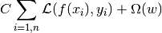
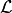

Scaling the regularization parameter for SVCs¶
The following example illustrates the effect of scaling the regularization parameter when using Support Vector Machines for classification. For SVC classification, we are interested in a risk minimization for the equation:

where
is used to set the amount of regularization
-  is a loss function of our samples and our model parameters.
is a penalty function of our model parameters
If we consider the loss function to be the individual error per sample, then the data-fit term, or the sum of the error for each sample, will increase as we add more samples. The penalization term, however, will not increase.
When using, for example, cross validation, to set the amount of regularization with C, there will be a different amount of samples between the main problem and the smaller problems within the folds of the cross validation.
Since our loss function is dependent on the amount of samples, the latter will influence the selected value of C. The question that arises is How do we optimally adjust C to account for the different amount of training samples?
The figures below are used to illustrate the effect of scaling our C to compensate for the change in the number of samples, in the case of using an L1 penalty, as well as the L2 penalty.
L1-penalty case¶
In the L1 case, theory says that prediction consistency (i.e. that under given hypothesis, the estimator learned predicts as well as a model knowing the true distribution) is not possible because of the bias of the L1. It does say, however, that model consistency, in terms of finding the right set of non-zero parameters as well as their signs, can be achieved by scaling C1.
L2-penalty case¶
The theory says that in order to achieve prediction consistency, the penalty parameter should be kept constant as the number of samples grow.
Simulations¶
The two figures below plot the values of C on the x-axis and the corresponding cross-validation scores on the y-axis, for several different fractions of a generated data-set.
In the L1 penalty case, the cross-validation-error correlates best with the test-error, when scaling our C with the number of samples, n, which can be seen in the first figure.
For the L2 penalty case, the best result comes from the case where C is not scaled.
Note:
Two separate datasets are used for the two different plots. The reason behind this is the L1 case works better on sparse data, while L2 is better suited to the non-sparse case.
{kind=link}
{kind=link}
Python source code: plot_svm_scale_c.py
print(__doc__)
# Author: Andreas Mueller <amueller@ais.uni-bonn.de>
# Jaques Grobler <jaques.grobler@inria.fr>
# License: BSD 3 clause
import numpy as np
import pylab as pl
from sklearn.svm import LinearSVC
from sklearn.cross_validation import ShuffleSplit
from sklearn.grid_search import GridSearchCV
from sklearn.utils import check_random_state
from sklearn import datasets
rnd = check_random_state(1)
# set up dataset
n_samples = 100
n_features = 300
# L1 data (only 5 informative features)
X_1, y_1 = datasets.make_classification(n_samples=n_samples,
n_features=n_features, n_informative=5,
random_state=1)
# L2 data: non sparse, but less features
y_2 = np.sign(.5 - rnd.rand(n_samples))
X_2 = rnd.randn(n_samples, n_features / 5) + y_2[:, np.newaxis]
X_2 += 5 * rnd.randn(n_samples, n_features / 5)
clf_sets = [(LinearSVC(penalty='L1', loss='L2', dual=False,
tol=1e-3),
np.logspace(-2.3, -1.3, 10), X_1, y_1),
(LinearSVC(penalty='L2', loss='L2', dual=True,
tol=1e-4),
np.logspace(-4.5, -2, 10), X_2, y_2)]
colors = ['b', 'g', 'r', 'c']
for fignum, (clf, cs, X, y) in enumerate(clf_sets):
# set up the plot for each regressor
pl.figure(fignum, figsize=(9, 10))
for k, train_size in enumerate(np.linspace(0.3, 0.7, 3)[::-1]):
param_grid = dict(C=cs)
# To get nice curve, we need a large number of iterations to
# reduce the variance
grid = GridSearchCV(clf, refit=False, param_grid=param_grid,
cv=ShuffleSplit(n=n_samples, train_size=train_size,
n_iter=250, random_state=1))
grid.fit(X, y)
scores = [x[1] for x in grid.grid_scores_]
scales = [(1, 'No scaling'),
((n_samples * train_size), '1/n_samples'),
]
for subplotnum, (scaler, name) in enumerate(scales):
pl.subplot(2, 1, subplotnum + 1)
pl.xlabel('C')
pl.ylabel('CV Score')
grid_cs = cs * float(scaler) # scale the C's
pl.semilogx(grid_cs, scores, label="fraction %.2f" %
train_size)
pl.title('scaling=%s, penalty=%s, loss=%s' %
(name, clf.penalty, clf.loss))
pl.legend(loc="best")
pl.show()
Total running time of the example: 18.44 seconds ( 0 minutes 18.44 seconds)